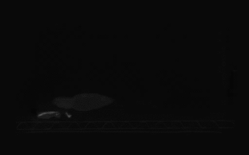
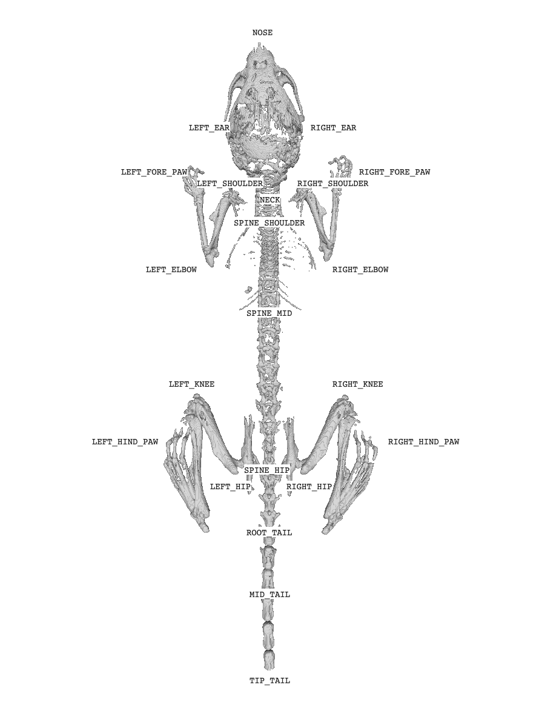

CT Scans


CT images of 80 C57BL/6N mice are acquired using a Siemens Inveon microPET/CT (Knoxville, TN). Animals underwent CT scans with the following settings: Total rotation of 220 degrees with 1 degree steps after 20 dark/light calibrations. The transaxial and axial field of view were 58.44 and 92.04 mm respectively. Exposure time was 800 ms with a binning factor of 2, the effective pixel size was 45.65 μm. The Voltage and current settings were 80 kV and 500 μA respectively. Total scan time per animal was estimated as 1010 seconds. CT images used the common cone-beam reconstruction method, included Houndsfield unit calibration, bilinear interpolation and a Hamming reconstruction filter. Reconstructed CT images are converted to DICOM using VivoQuant software.
Video Frames


Videos of a Diversity Outbred strain of mice that have a range of weights (approximately 20g to 60g), sexes (female or male), ages (1 to 3 years), and coat colors (albino, black, agouti) are captured from a single camera (Vium) at 24 frames per second. From this diverse collection of videos, we manually select 455 video clips where the animals perform one of the following behaviors: standing, drinking, eating, grooming, sleeping, walking or running on the wheel. Each clip is 0.5 seconds long and sampled at 24HZ. Activities are manually labeled by the researchers by watching the clip and surrounding context. The keypoints of the mouse in each of 12 frames from each clip are annotated by trained animal technicians.
Keypoints Definitions
|  | Keypoint Name |
|---|
| NOSE |
| NECK |
| LEFT_EAR |
| RIGHT_EAR |
| LEFT_SHOULDER |
| RIGHT_SHOULDER |
| LEFT_FORE_PAW |
| RIGHT_FORE_PAW |
| LEFT_HIP |
| RIGHT_HIP |
| LEFT_HIND_PAW |
| RIGHT_HIND_PAW |
| ROOT_TAIL |
| MID_TAIL |
| TIP_TAIL |
| SPINE_MID |
| SPINE_HIP |
| LEFT_KNEE |
| RIGHT_KNEE |
| LEFT_ELBOW |
| RIGHT_ELBOW |
| SPINE_SHOULDER |
Multiple-View Keypoints
The Multiple-view video data is 35 consecutive frames of a single C57BL/6N mouse in a custom capture rig, which consists of a top-down RGB+Depth camera (Kinect) and two side RGB cameras with synchronized timing. The cameras are calibrated with overlapping fields of view. We label the keypoints in synchronized frames from each view and triangulate the 3D location of each keypoint that minimizes the reprojection errors.
Download
If you are interested in accessing the dataset, please fill out the following form.